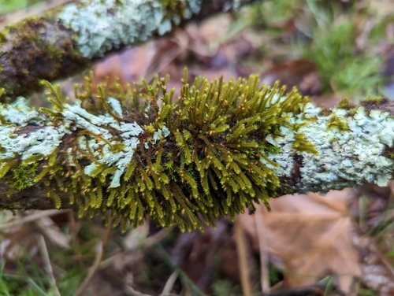

Cryphaeaceae
Hidden Moss Family / Cryphaea Moss Family
Cryphaeaceae is a family of primarily pleurocarpous mosses characterized by their predominantly epiphytic habit (growing on tree bark) and their unique sporophyte presentation. The capsules are typically borne on very short stalks (sessile or short seta) and remain immersed within or only slightly emergent from conspicuous, often large, modified leaves (perichaetial leaves) surrounding the base of the sporophyte, giving the impression that the capsules are hidden.
Overview
The Cryphaeaceae family contains approximately 6-10 genera and around 50 species, distributed mainly in tropical and subtropical regions, but extending into temperate zones, particularly in the Southern Hemisphere. These mosses are almost exclusively found growing as epiphytes on the bark of tree trunks and branches in humid forests and woodlands, rarely occurring on rock.
Plants typically form appressed mats or somewhat bushy, spreading tufts on bark surfaces. While technically pleurocarpous (with sporophytes arising laterally), the growth habit can sometimes appear more tufted or sub-dendroid due to erect secondary stems. The most striking feature, however, is the sporophyte. Unlike most pleurocarpous mosses with capsules exserted on long setae, Cryphaeaceae have capsules that are either sessile or borne on extremely short setae, keeping them largely concealed within the prominent cluster of perichaetial leaves at their base.
This immersed or emergent sporophyte condition is considered an adaptation, possibly related to dispersal or protection in their epiphytic environment. Phylogenetically, the family is placed within the Bryopsida, but its exact ordinal placement is debated, often considered part of the Hypnales sensu lato or sometimes allied with the Leucodontales, another order containing many epiphytes with reduced sporophytes.
Quick Facts
- Scientific Name: Cryphaeaceae
- Common Name: Hidden Moss Family, Cryphaea Moss Family
- Number of Genera: Approximately 6-10
- Number of Species: Approximately 50
- Distribution: Primarily tropical/subtropical, extending to temperate regions; almost exclusively epiphytic.
- Habitat: Bark of trees and shrubs in humid forests/woodlands.
- Evolutionary Group: Bryophytes - Mosses (Class: Bryopsida, Order: Hypnales / Leucodontales)
Key Characteristics
Growth Form and Habit
Plants are pleurocarpous, typically with creeping primary stems giving rise to erect, ascending, or spreading secondary stems and branches. Forms appressed mats or spreading tufts, sometimes appearing bushy or sub-dendroid. Usually dull green, yellowish-green, or brownish-green.
Stems
Primary stems creeping, secondary stems often pinnately or irregularly branched. Paraphyllia are usually absent.
Leaves
Leaves are typically crowded and often appressed to the stem when dry, erect-spreading when moist. Shape is commonly ovate to ovate-lanceolate, often concave, with an acute to acuminate apex. The costa (midrib) is single and usually strong, typically ending below the apex or occasionally percurrent. Leaf cells are generally small, isodiametric (quadrate/hexagonal) to shortly rhomboidal, often thick-walled, and smooth or slightly papillose. Alar cells are usually not strongly differentiated.
Asexual Reproduction
Specialized asexual propagules are generally uncommon; reproduction may occur via fragmentation.
Sporophytes (Reproductive Structures)
Sporophytes arise laterally on secondary stems or branches. This is the most defining feature of the family:
- Seta: Extremely short or virtually absent (sessile or very short seta).
- Capsule Position: Consequently, the capsule remains immersed within or only slightly emergent from a conspicuous tuft of enlarged, often sheathing perichaetial leaves.
- Capsule Morphology: Capsule is typically erect, symmetric, ovoid to short-cylindric, and smooth-walled.
- Peristome: Usually double (diplolepidous), but often reduced, variable, or sometimes appearing single.
- Operculum: Conic to rostrate.
Habitat
Almost exclusively epiphytic, growing on the bark of living trees and shrubs in humid environments. Very rarely found on rock.
Field Identification
Identifying Cryphaeaceae primarily involves recognizing their epiphytic habit and the unique presentation of their sporophytes.
Primary Identification Features
- Habitat (Key Feature): Growing as an epiphyte on tree bark (trunks or branches).
- Sporophyte Position (Key Feature): Look for capsules that are sessile or on very short setae, making them appear immersed within or barely emergent from the surrounding large perichaetial leaves.
- Growth Habit: Pleurocarpous, forming appressed mats or tufts on bark.
Secondary Identification Features
- Leaves: Often ovate to ovate-lanceolate, appressed when dry, costa single and strong but not reaching apex.
- Capsule Shape: Erect, ovoid to short-cylindric.
Seasonal Identification Tips
- Year-round: The vegetative mats or tufts on bark are visible year-round.
- Sporophyte Timing: Fertile plants with the characteristic immersed/emergent capsules can often be found throughout the year in suitable climates, though maturation may peak seasonally. Careful searching amongst the leaves is required to spot the capsules.
Common Confusion Points
Cryphaeaceae can be confused with other epiphytic pleurocarpous moss families:
- Leucodontaceae: Also epiphytic, often with immersed/shortly exserted capsules, but typically differ in peristome structure and sometimes leaf areolation (e.g., papillose cells in Leucodon).
- Neckeraceae: Often have flattened (complanate) leaves and shoots, capsules may be immersed or exserted, peristome differs.
- Meteoriaceae / Pterobryaceae: Often form hanging festoons or distinctly dendroid shapes; capsules may be immersed but differ in details.
- Leskeaceae: Some species are epiphytic, but usually have capsules clearly exserted on longer setae and often have papillose leaf cells.
The combination of epiphytic habit and sessile/short-seta capsules immersed within perichaetial leaves is the most reliable identifier for Cryphaeaceae.
Field Guide Quick Reference
Look For:
- Habitat: Epiphytic (on tree bark)
- Pleurocarpous mats/tufts
- Capsule sessile or on very short seta
- Capsule immersed/emergent in large perichaetial leaves
- Capsule erect, ovoid/short-cylindric
- Leaves often ovate, costa single
Key Variations:
- Plant size and branching pattern
- Degree of capsule emergence
- Peristome development (often reduced)
Notable Examples
The family includes several genera characteristic of epiphytic habitats:

Cryphaea heteromalla
Common Cryphaea / Side-fruiting Moss
A relatively widespread species in temperate regions (including Europe, parts of N. America). Forms yellowish-green tufts on tree branches and trunks. Secondary stems often somewhat pinnately branched. Capsules ovoid, immersed within long, pointed perichaetial leaves.

Forsstroemia trichomitria
(No standard common name)
Often a more robust moss than Cryphaea, forming yellowish-green to brownish mats on tree trunks, particularly in eastern North America and East Asia. Leaves broadly ovate, concave. Capsules immersed, peristome often reduced.
Phylogeny and Classification
Cryphaeaceae belongs to the class Bryopsida. Its ordinal placement has been historically debated. Due to its epiphytic habit and reduced sporophyte features (immersed capsule, short seta, often reduced peristome) – traits shared with families like Leucodontaceae – it was often placed in the order Leucodontales.
However, molecular phylogenetic studies increasingly suggest that many families traditionally placed in Leucodontales are actually nested within the very large and diverse order Hypnales. Cryphaeaceae appears to be one of these families, likely representing a lineage within Hypnales that specialized for an epiphytic lifestyle, leading to convergent evolution of reduced sporophyte features seen in other unrelated epiphytic groups. Its exact position within the Hypnales tree is still under investigation.
Position in Plant Phylogeny
- Kingdom: Plantae
- Division: Bryophyta (Mosses)
- Class: Bryopsida
- Subclass: Bryidae
- Order: Hypnales (preferred based on molecular data) / or Leucodontales (traditional)
- Family: Cryphaeaceae
Evolutionary Significance
Cryphaeaceae is significant for understanding:
- Adaptation to Epiphytism: Shows morphological adaptations (growth form, possibly sporophyte reduction) associated with living on tree bark.
- Convergent Evolution: The immersed capsule state has likely evolved multiple times in different epiphytic moss lineages (e.g., Cryphaeaceae, Leucodontaceae, some Neckeraceae), illustrating convergent adaptation.
- Sporophyte Reduction: Provides examples of evolutionary trends towards simplification of the sporophyte generation in certain ecological contexts.
- Phylogeny of Pleurocarps: Its placement helps resolve the complex relationships within the Hypnales/Leucodontales complex.